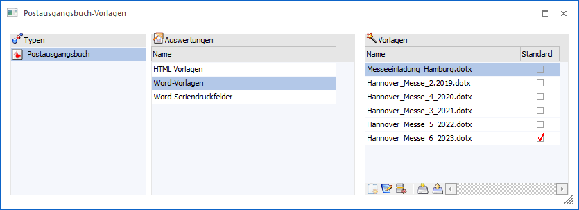

Durch Anwahl des Buttons "Vorlage (Office / HTML)" im "Postausgangsbuch" können Vorlagen für die Übergabe an Microsoft Word eingebunden und verwaltet werden.

Nähere Informatioen zum Erstellen und Anwenden der Vorlagen entnehmen Sie bitte dem Kapitel "Postausgangsbuch" im Handbuch.
Buttons

Ø Ok
Durch Anwahl des Buttons "Ok" bzw. der Taste F5 werden Veränderungen am Namen der Vorlage bzw. an der Checkbox "Standard" gespeichert.
Ø Ende
Bei Anwahl des Buttons "Ende" bzw. der Taste ESC wird das Fenster geschlossen und alle nicht gespeicherten Änderungen verworfen.
Ø Berechtigungen
Mit dem Button "Berechtigungen" kann das Fenster "Objekt Berechtigungen" geöffnet werden, um für die Vorlage Berechtigungen für Benutzer oder Benutzergruppen zu vergeben. Nähere Informationen zu diesem Thema finden Sie im Kapitel "Objektberechtigungen".